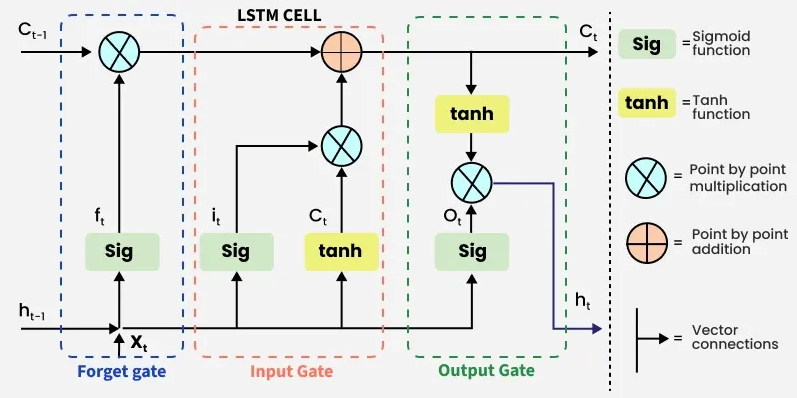

Time Series Prediction with XGBoost and LSTM
Forecasting as supervised learning
Given a univariate time series \(\{y_t\}_{t=1}^T\), forecasting is often reframed as supervised learning by constructing input–target pairs:
\[ \mathbf{x}_t = \big[y_{t-1}, y_{t-2}, \dots, y_{t-k}\big]^\top,\quad \hat{y}_t = f(\mathbf{x}_t),\quad t=k+1,\dots,T. \]
This “sliding window” / “lag embedding” is common for both:
- Feature-based ML (e.g., XGBoost on \(\mathbf{x}_t\))
- Sequence models (e.g., LSTM that consumes a sequence \((y_{t-k},\dots,y_{t-1})\))
Horizons and targets
One-step ahead
One-step forecasting targets:
\[ y_{t} \; \text{given}\; (y_{t-1}, y_{t-2}, \dots). \]
Multi-step ahead
For horizon \(h\ge 1\), the target is:
\[ y_{t+h}. \]
Two common strategies:
- Direct (separate model per horizon): \[ \hat{y}_{t+h} = f_h(\mathbf{x}_t) \]
- Recursive (iterate one-step model): \[ \hat{y}_{t+1}=f(\mathbf{x}_t),\;\; \hat{y}_{t+2}=f(\hat{y}_{t+1}, y_t, \dots), \;\; \dots \]
Feature-based forecasting with XGBoost
Supervised design matrix
Construct a supervised dataset \(\{(\mathbf{x}_t, y_t)\}\). For lag order \(k\),
\[ \mathbf{x}_t = \begin{bmatrix} y_{t-1}\\ y_{t-2}\\ \vdots\\ y_{t-k} \end{bmatrix}, \quad y_t \in \mathbb{R}. \]
XGBoost model form (additive trees)
XGBoost learns an additive ensemble of regression trees:
\[ \hat{y}_t = \sum_{m=1}^{M} \eta \cdot \mathrm{Tree}_m(\mathbf{x}_t), \]
where \(M\) is number of boosting rounds, each with a regression tree, and \(\eta\) is the learning rate.
The objective is typically regularized empirical loss minimization:
\[ \min_{\{\mathrm{Tree}_m\}} \sum_{t} \big(y_t - \hat{y}_t\big)^2 + \mathrm{regularizer}(\mathrm{Trees}), \]
Feature engineering expansions
Beyond pure lags, a common extension is augmenting \(\mathbf{x}_t\) with transformations:
Differences: \[ \Delta y_t = y_t - y_{t-1} \]
Rolling mean over window \(w\): \[ \mu_t^{(w)}=\frac{1}{w}\sum_{i=0}^{w-1} y_{t-i} \]
Rolling std: \[ \sigma_t^{(w)}=\sqrt{\frac{1}{w}\sum_{i=0}^{w-1}(y_{t-i}-\mu_t^{(w)})^2} \]
LSTM forecasting (sequence modeling)
Input tensor and windowing
LSTMs consume sequences. For a univariate series, a common supervised framing uses:
- Input sequence length \(k\) (look-back)
- Feature dimension \(d=1\)
So each training example has shape: \[ \mathbf{X}_t \in \mathbb{R}^{k\times d}, \quad \mathbf{X}_t = [y_{t-k},\dots,y_{t-1}]^\top. \]
In practice, LSTM requires the shaping (samples, timesteps, features).
Scaling matters: LSTM is a form of neural networks, which often benefit from scaling inputs to \([0,1]\):
LSTM equations (core update)
An LSTM cell (at time step \(t\)) with input \(x_t\), hidden state \(h_{t-1}\), and cell state \(c_{t-1}\):

XGBoost vs LSTM
- Feature-based models assume we can summarize history via engineered \(\mathbf{x}_t\).
- LSTMs assume useful information can be learned from sequence processing:
\[ \hat{y}_t = f_{\theta}(y_{t-k:t-1}) \]
without manually specifying all summary statistics.
- XGBoost often performs strongly with fewer data points due to structured features and strong regularization.
- LSTMs typically need more data and careful regularization; otherwise high-variance behavior can show up in backtests.